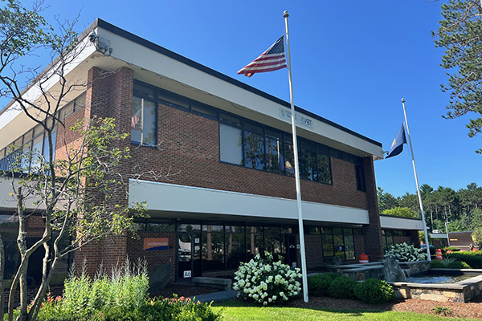

About ICE in Vermont
Welcome, tour enthusiasts! You might be surprised to learn that little ol' Vermont is home to not one, but two nationally significant ICE facilities. That's right - tucked away in Williston, just a stone's throw from Burlington, are major hubs of federal immigration enforcement operations. Let's take a peek at what's happening in our own backyard!
Stop #1: 188 Harvest Lane, Williston

Our first tour stop is this impressive 74,320 square foot facility staffed by approximately 60 ICE personnel. This building houses some fascinating operations:
- Law Enforcement Support Center (LESC) - A 24/7/365 operation that never sleeps!
- Homeland Security Investigations Tip Line (HSITL) - Fun fact: This is the nation's only tip line processing center. Every tip submitted online or by phone across the entire country comes right here to Vermont!
- National Crime Information Center - A data center managing records for approximately 340,000 individuals
The facility is owned by Easterly Government Properties, Inc. and has a lease running through 2031. They're planning to add 100 more employees - business is booming!
Stop #2: 426 Industrial Avenue, Williston
Our second stop is even larger! This 147,554 square foot building (with ICE occupying about 35,000-40,000 square feet) is staffed by around 100 ICE personnel. Here's what makes this location special:
- National Criminal Analysis and Targeting Center (NCATC) - One of only two such facilities in the entire country! The other is way out in Santa Ana, California.
- Impressive Numbers - In fiscal year 2023 alone, this facility investigated 4.6 million individuals. That's a lot of investigating!
- Social Media Monitoring - A team of contractors dedicated to monitoring Facebook, TikTok, Instagram, and YouTube
- Commercial Databases - Access to tools like LexisNexis Accurint and Thomson Reuters CLEAR for comprehensive background searches
- AI-Powered Analysis - Cutting-edge artificial intelligence for targeting and analysis
- Advanced Surveillance Tech - Contracts with companies providing sophisticated phone surveillance capabilities
This facility operates during core hours of 7:00 AM to 6:30 PM, Monday through Friday. The building is owned by Whitecap Ventures LLC, a local company.
A Glimpse of the Facilities
Here are some photos from around the area where these operations take place:


Why This Matters
These aren't your typical government office buildings. These facilities represent significant infrastructure for federal surveillance and immigration enforcement that affects communities nationwide - all operating quietly in Vermont. Our tours help shine a light on these operations so that Vermonters can see for themselves what's happening in their community.
Whether you're curious, concerned, or just want to see something unusual, ICE Tours VT offers a unique opportunity to witness this infrastructure firsthand. After all, seeing is believing!